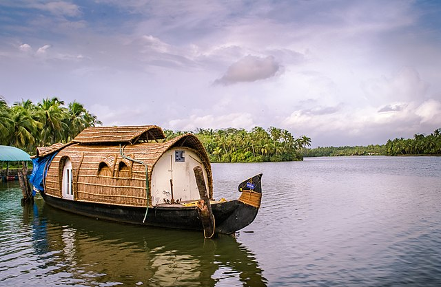

Top 6 Destination

Idukki
This beautiful High range district of Kerala is geographically known for its mountainous hills and dense forests.

Kozhikode
kozhikode city also known as Calicut is the headquarters of this district.Kozhikode district is bordered by the districts of Kannur

Kannur
Kannur is dubbed as the City of Looms and Lores, thanks to the flourishing handloom industry and folk art called Theyyam

Alappuzha
A houseboat cruise in these backwaters is a delightful experience.Alappuzha is also the access point for the annual Nehru Trophy Boat Race, held on the Punnamada Lake.

Ernakulam
Ernakulam district also hosts the highest number of international and domestic tourists in Kerala state.

Palakkad
Palakkad is one of the most ideal cities in Kerala to buy a home and settle down.